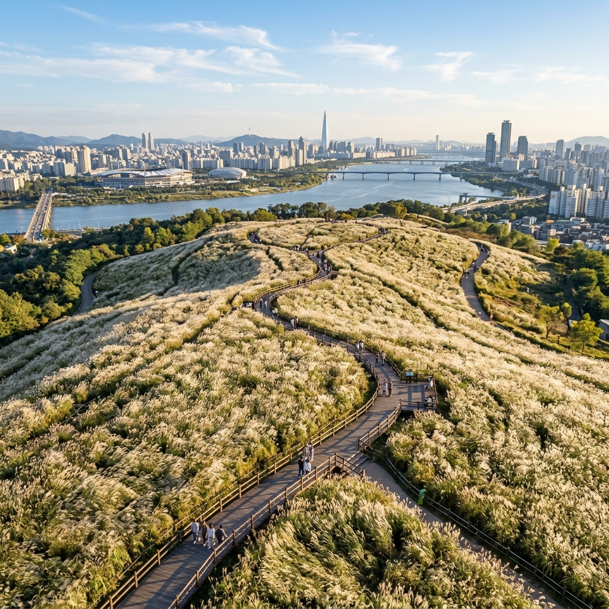
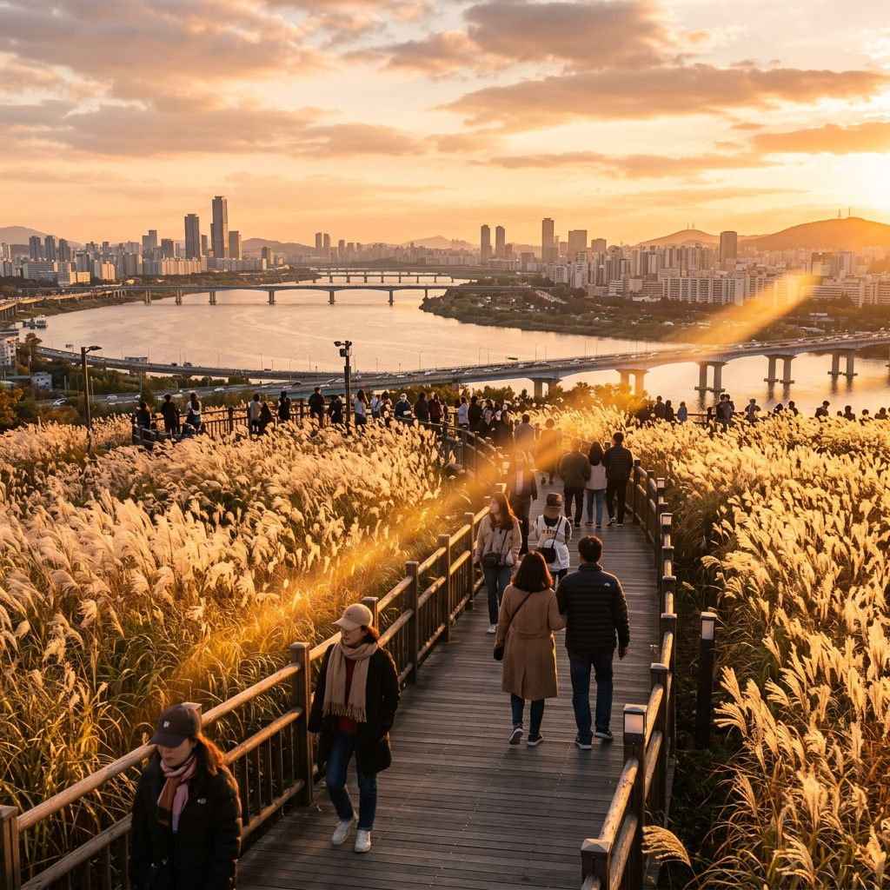
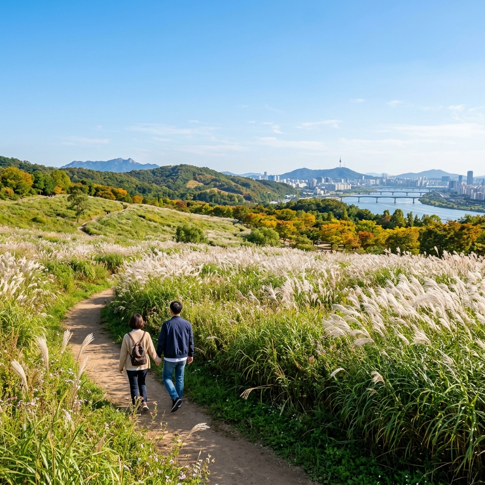

서울 하늘공원 억새 언제 절정이나, 월드컵공원 9월 은빛 물결 가을 전초 코스
📌 핵심 요약
서울 마포구 상암동에 자리한 하늘공원은 약 78,000평 규모의 억새 군락지로, 가을이면 도심 한가운데 은빛 물결이 장관을 이루는 명소입니다.
억새 절정 시기는 매년 10월 중하순이지만, 9월 말부터 이미 억새가 고개를 내밀기 시작합니다. 인파가 몰리기 전 9월에 방문하면 한결 여유롭게 즐길 수 있습니다.
이 글에서는 하늘공원 억새 개화 시기, 올라가는 법, 인생샷 명당, 노을공원 연계 코스, 주차·교통 정보까지 꼼꼼히 정리했습니다.

서울 하늘공원 억새밭 전경 / AI 제작 이미지
① 하늘공원 억새, 언제 절정인가
서울에서 가장 규모가 큰 억새 명소인 하늘공원은 상암동 월드컵공원 내 가장 높은 언덕에 위치합니다.
억새 개화 시기는 기후에 따라 매년 조금씩 달라지지만, 일반적으로 9월 말~10월 초에 이삭이 올라오기 시작해 10월 중순~10월 말에 절정에 달합니다.
억새가 완전히 은빛으로 물들어 바람에 출렁이는 장면은 10월 중하순에 가장 극적으로 연출됩니다. 다만 이 시기에는 주말마다 수만 명이 몰려 정상까지 오르는 에스컬레이터 대기가 1시간을 넘기도 합니다.
9월 방문의 이점을 정리하자면 이렇습니다. 아직 억새가 금빛·청록빛을 머금어 색감이 다채롭고, 공원 정상에서 바라보는 한강과 북한산의 전망도 가을 하늘과 어우러져 아름답습니다. 무엇보다 이파리가 우거진 덜 알려진 하늘공원을 조용히 거닐 수 있다는 것이 최대 장점입니다.
서울시 공원녹지과와 하늘공원 관리소는 매년 억새 절정 시기가 임박하면 공식 채널을 통해 개화 현황을 안내합니다. 방문 전 서울시 공원 공식 홈페이지에서 당해 연도 하늘공원 억새 상황을 꼭 확인하세요.
② 하늘공원까지 올라가는 법 — 계단·에스컬레이터·하늘길
하늘공원은 해발 약 100m 언덕 위에 있어 올라가는 방법이 몇 가지입니다.
1. 메타세쿼이아길 계단: 가장 인기 있는 코스입니다. 공원 입구에서 약 291개의 계단을 오르면 정상까지 약 15~20분이 걸립니다. 계단 양옆으로 메타세콰이어 나무가 늘어서 있어 산책 자체가 즐겁습니다.
2. 하늘 에스컬레이터: 월드컵공원 입구 쪽에서 운영하는 에스컬레이터(유료·약 1,000원)를 이용하면 걷지 않고도 정상에 닿습니다. 단, 10월 억새 절정기에는 대기 줄이 매우 길어집니다. 9월 방문 시에는 대기 없이 바로 탑승 가능한 경우가 많습니다.
3. 자전거 도로 경유(하늘길): 공원 외곽 도로를 따라 자전거나 도보로 이동할 수도 있습니다. 경사가 완만해 유모차·휠체어 이용자에게도 적합합니다.
올라가는 길에 억새 전망 데크가 중간중간 설치되어 있으니 올라가는 과정부터 사진 찍으며 즐기세요. 체력이 걱정된다면 에스컬레이터를 타고 올라가고, 내려올 때 계단을 이용하는 방식도 좋습니다.
③ 억새 인생샷 명당 — 어디서 찍나
하늘공원 내 인생샷 포인트는 크게 세 곳으로 나뉩니다.
1. 정상 전망대 앞 억새밭: 공원 가장 높은 지점에 있는 전망대 앞 억새 군락이 대표적인 포토존입니다. 억새 뒤로 한강·남산·북한산이 한 프레임에 들어옵니다. 오전 이른 시간(오전 9시 이전)에 방문하면 역광 없이 깔끔한 사진을 얻을 수 있습니다.
2. 노을광장 방향 억새 산책로: 정상에서 노을광장 쪽으로 이어지는 억새 산책로는 양쪽이 억새로 둘러싸인 구조라 억새 '터널' 사진을 찍기에 최적입니다. 오후 4~5시 사이 역광을 역이용하면 황금빛 실루엣 사진이 나옵니다.
3. 해질녘 노을 뷰포인트: 하늘공원 서쪽 끝에 한강과 하늘이 동시에 보이는 조망 데크가 있습니다. 해질 무렵 억새와 노을이 겹치는 장면은 서울 최고의 풍경 중 하나로 꼽힙니다. 이 포인트는 9월에도 훌륭합니다.

하늘공원 전망 데크와 노을빛 억새밭 / AI 제작 이미지
④ 하늘공원 전망대 — 한강·북한산 한눈에
하늘공원 정상의 전망대에 서면 사방이 탁 트인 360도 파노라마 뷰가 펼쳐집니다.
동쪽으로는 북한산의 웅장한 능선이, 남쪽으로는 한강과 여의도·남산이, 서쪽으로는 인천 방향 하늘과 노을이 펼쳐집니다. 맑은 날에는 서울 전역이 발아래 내려다보이는 느낌이라 "서울에 이런 곳이 있었나" 하는 감탄이 절로 나옵니다.
전망대 주변에는 바람을 막아주는 나무 울타리와 벤치가 설치돼 있어 피크닉처럼 앉아 쉬기도 좋습니다. 망원경 없이도 한강 위 선박과 상암 스타디움을 볼 수 있습니다.
9월에는 억새가 아직 완전히 은빛이 되지 않았지만, 파란 하늘 아래 초록과 은빛이 뒤섞인 풍경은 10월과는 다른 청량한 매력이 있습니다. 특히 맑은 날 오전 10시~11시 사이 전망대에서 바라보는 뷰가 가장 선명합니다.
⑤ 노을공원 연계 — 더 넓은 억새를 만나려면
하늘공원 바로 아래쪽에 노을공원이 있습니다. 하늘공원보다 덜 알려졌지만 억새 면적은 뒤지지 않으며, 이름처럼 해질녘 노을 풍경이 특히 아름다운 곳입니다.
하늘공원→노을공원을 연계하는 코스가 월드컵공원을 반나절에 제대로 즐기는 방법입니다. 두 곳을 합치면 약 2~3시간이 소요되며, 걷다 보면 한강으로 이어지는 평화의공원까지 자연스럽게 이어집니다.
노을공원 이용 팁: 노을공원은 별도의 매표소나 입장료가 없으며, 하늘공원 에스컬레이터와 달리 도보로만 이동합니다. 하늘공원보다 경사가 완만해 어린 자녀를 데리고 가기에도 부담이 적습니다.
두 공원 모두 반려동물 동반 가능하며, 리드줄은 필수입니다. 억새 시즌에는 개를 데리고 방문하는 가족도 많아 강아지들의 가을 소풍 명소로도 유명합니다.
⑥ 9월 가을 전초 방문 — 인파 피하고 여유롭게
10월 절정기에는 주말마다 수만 명이 몰립니다. 에스컬레이터 대기 1시간, 주차장 포화, 정상 데크 만원 상태는 기본이 됩니다.
9월 방문의 장점을 정리합니다:
첫째, 억새 전 단계를 볼 수 있습니다. 억새는 9월 초·중순부터 이삭이 올라오기 시작해 색이 점점 달라집니다. "억새가 은빛이 되어가는 과정"을 본다는 느낌이 있어 사진 매니아들에게는 10월 못지않게 인기입니다.
둘째, 날씨가 맑고 하늘이 높습니다. 9월은 아직 낮 기온이 높지만 아침저녁은 서늘해 걷기 좋습니다. 하늘이 맑고 파란 날이 많아 전망 사진 퀄리티도 뛰어납니다.
셋째, 주차와 이동이 훨씬 자유롭습니다. 10월 절정기 주말 대비 주차 대기 시간이 거의 없으며, 에스컬레이터도 곧바로 탑승 가능한 경우가 많습니다.

노을공원 초가을 억새 산책로 / AI 제작 이미지
⑦ 주차장과 대중교통 — 주말 혼잡 피하는 시간
대중교통을 이용하면 주차 걱정 없이 편리합니다.
- 지하철 6호선 월드컵경기장역 1번 출구에서 도보 10~15분
- 6호선 마포구청역에서도 도보 20분 거리
- 버스 간선 271·271, 지선 7713 등이 상암동 방향 운행
자가용 주차는 월드컵공원 공영주차장을 이용합니다. 요금은 5분당 150원 수준(공식 요금은 방문 전 재확인)이며, 주말 오전 10시 이후에는 빠르게 찼다가 오후 4~5시 이후 빠집니다.
억새 절정기 주말이라면 오전 7~8시 또는 오후 4시 이후에 방문하는 것이 현명합니다. 이른 아침은 억새에 이슬이 맺혀 촉촉하고, 해 질 무렵은 노을과 억새가 함께 물들어 최고의 감성 사진을 담을 수 있습니다.
⑧ 월드컵공원 연계 코스 — 평화의공원·난지한강공원
월드컵공원은 하늘공원·노을공원 외에도 평화의공원과 난지한강공원이 이어집니다.
평화의공원에는 대형 잔디광장과 연못, 피크닉 공간이 잘 갖춰져 있어 돗자리를 펴고 쉬기 좋습니다. 어린 자녀가 있다면 공원 내 물놀이장(여름 운영)과 자전거 대여소도 활용할 수 있습니다.
난지한강공원은 자전거 도로가 잘 정비되어 있어 한강변 라이딩 코스로 인기입니다. 하늘공원 억새 감상 후 자전거로 한강변을 달리는 패키지 나들이를 즐기는 가족도 많습니다.
💡 꿀팁: 하늘공원 정상에서 계단을 내려와 평화의공원을 한 바퀴 돌고, 난지한강공원에서 자전거 대여 후 한강 라이딩으로 마무리하면 충실한 반나절 코스가 완성됩니다.
⑨ 방문 전 체크리스트 — 꼭 챙겨야 할 것들
하늘공원은 정상까지 경사가 꽤 있어 편한 신발이 필수입니다. 슬리퍼나 힐 차림으로 계단을 오르다 발목을 다치는 경우가 종종 있습니다.
선글라스와 모자도 빠뜨리지 마세요. 10월 절정기는 물론 9월에도 공원 정상은 나무 그늘이 없어 직사광선이 강합니다.
억새 시즌 주말에는 화장실 줄이 길어집니다. 에스컬레이터 입구 근처 공중화장실과 정상 화장실이 있으니 올라가기 전에 미리 이용하는 것이 좋습니다.
음료와 간식은 입구 매점에서 구매 가능하지만 가격이 다소 높습니다. 물과 간단한 행동식은 미리 준비하는 것을 권합니다. 정상 근처에는 취사 및 음식물 취식이 제한되므로 돗자리 피크닉은 평화의공원에서 즐기세요.
⑩ 상암동 인근 맛집과 카페 — 공원 나들이 전후 식사
하늘공원 방문 전후 식사는 상암동 먹자골목이나 상암 DMC(디지털미디어시티) 인근 식당가를 이용합니다.
공원에서 도보 10~15분 거리에 한식·분식·카페가 모여 있습니다. 특히 상암동 카페 거리는 인스타 감성 카페들이 입점해 있어 사진 찍기 좋아하는 20~30대 방문객에게 인기입니다.
억새 나들이 후 여유롭게 한강이 보이는 카페에서 커피 한 잔 마시며 마무리하는 것을 권합니다. 일부 카페는 하늘공원 방향 창이 트여 있어 억새 뷰를 즐기며 음료를 마실 수 있습니다.
주차는 대형 쇼핑몰인 월드컵몰(이케아 상암) 방향 공영주차장도 활용 가능하니 공원 방문 계획과 연계해 활용하세요.
#하늘공원억새
#서울억새명소
#월드컵공원
#노을공원
#억새절정시기
#서울가을나들이
#상암동
#가을여행
#서울데이트코스
#억새인생샷